Osez Joséphine des Innamorati
RobeFemelle · Seal point
StatutAdoptée
Album16 photos, de juillet 2018 à octobre 2018


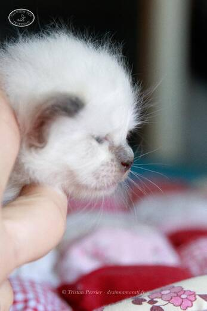

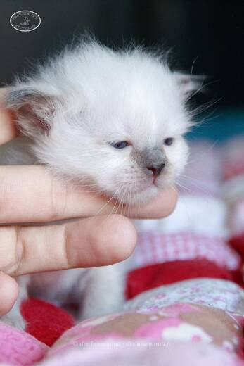

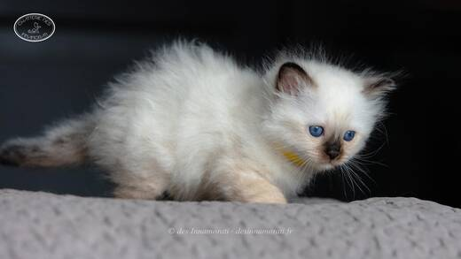

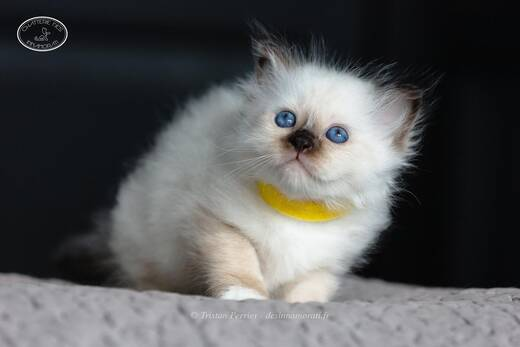

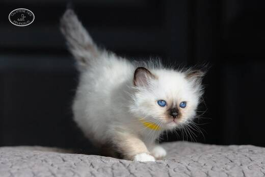

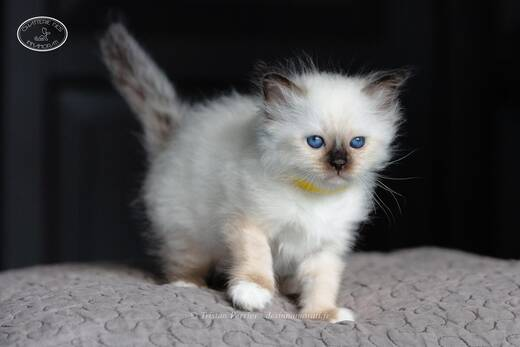

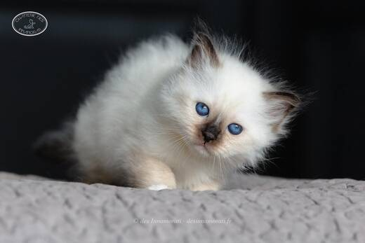

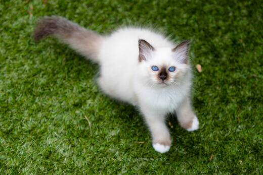

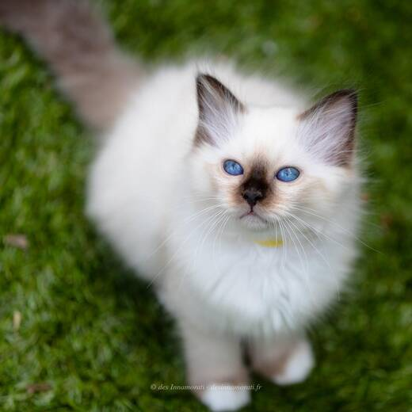

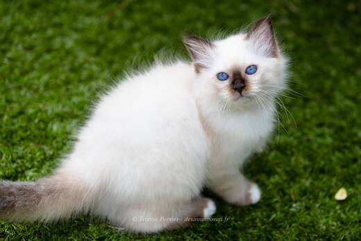

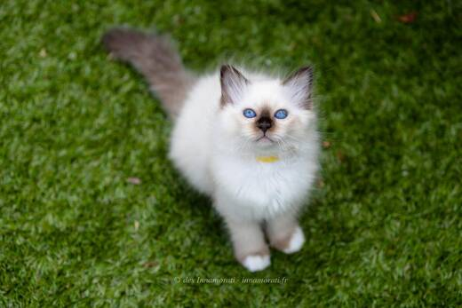

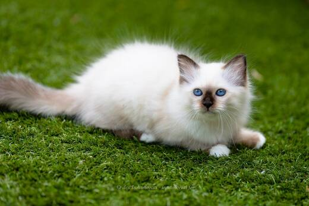

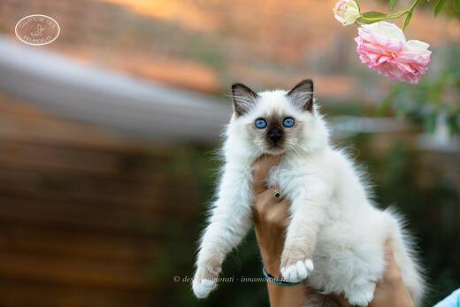

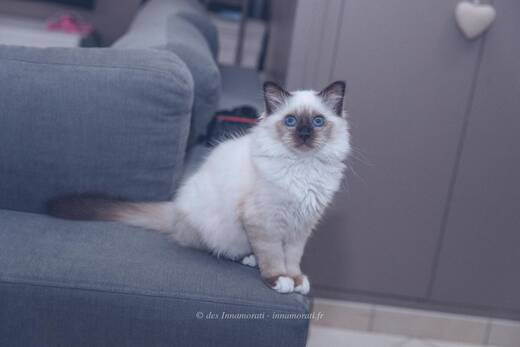
Photos réduites et marquées. Elles appartiennent à la Chatterie des Innamorati et ne peuvent pas être reprises dans une annonce.